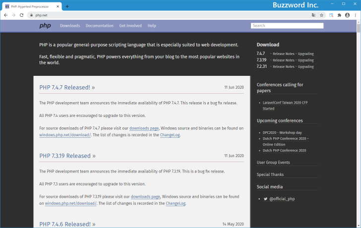
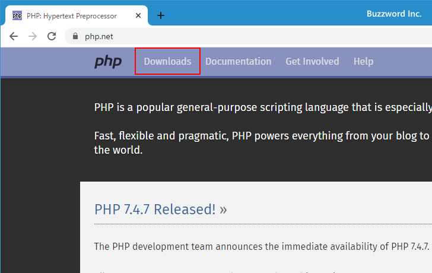
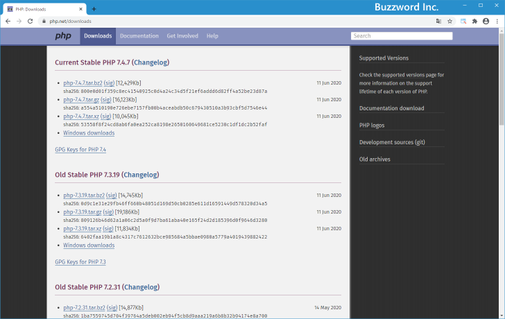
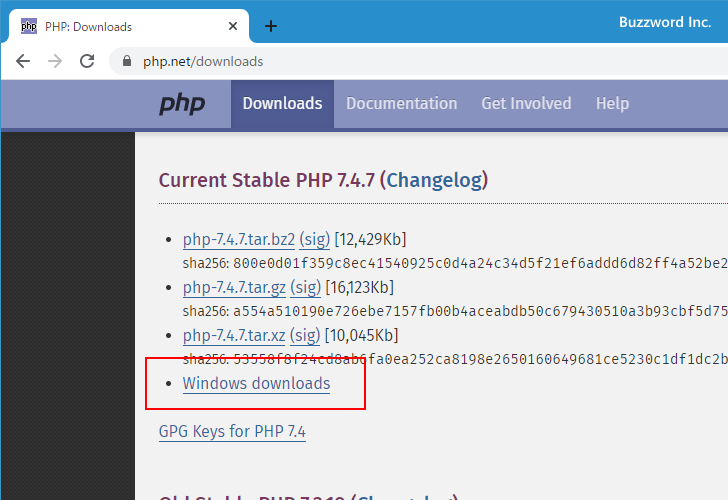
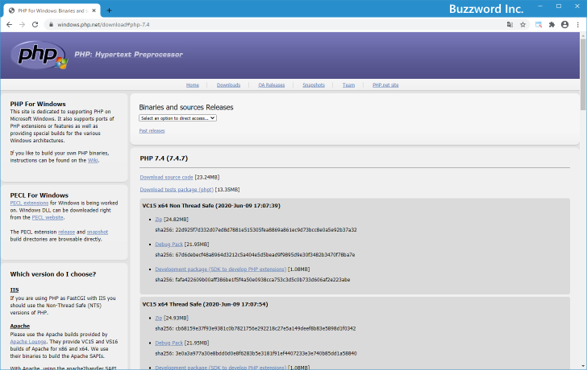
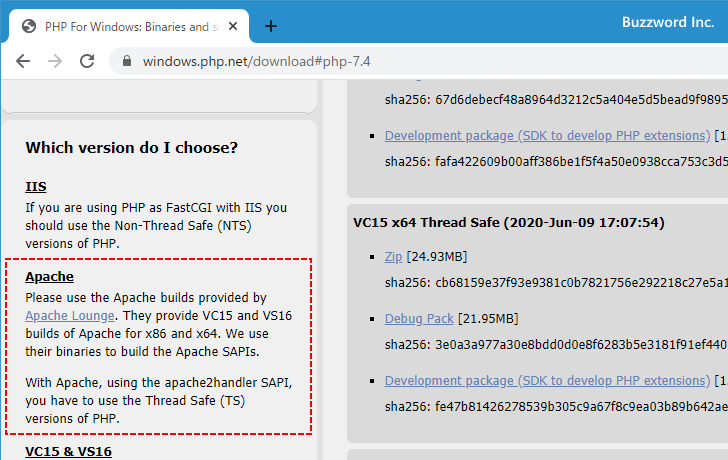
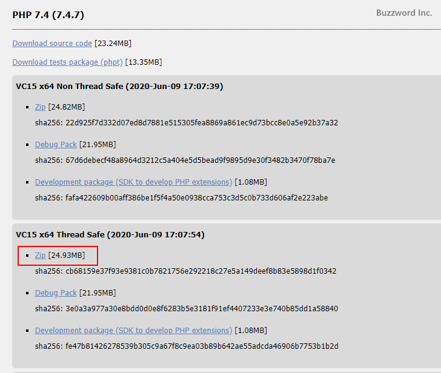
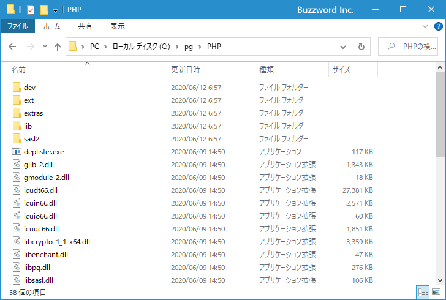

- Home ›
- PHP入門 ›
- PHPインストールと初期設定
PHPのダウンロードとインストール
PHP のダウンロードとインストールを行う方法について解説します。 2020 年 6 月現在の最新バージョンである PHP 7.4.7 を使用します。
PHPをダウンロードする
PHP のダウンロードは下記のURLから開始します。

画面上部に表示されている「Downloads」をクリックして下さい。

PHP のダウンロード画面が表示されます。

2020 年 6 月現在、 PHP 7.4 系、 PHP 7.3 系と PHP 7.2 系がダウンロード可能です。今回は php-7.4.7 をダウンロードします。「Current Stable PHP 7.4.7」ブロックの中にある「Windows downloads」をクリックして下さい。

Windows 用のバイナリ―を取得するためのページが表示されます。

PHP 7.4.7 には 32bit 用の「VC15 x86 Non Thread Safe」と「VC15 x86 Thread Safe」、そして 64bit 用の「VC15 x64 Non Thread Safe」と「VC15 x64 Thread Safe」が用意されています。今回は Windows10(64bit) の環境にインストールしますので64bit 用のものを使用します(ご自身の環境に合わせて選んで下さい)。なお VC15 とは Visual Studio 2017 でコンパイルされたものという意味です。
今回 PHP を利用する Web サーバとして Apache を利用しますが、サイドバーには次のように記載されています。
Apache
Please use the Apache builds provided by Apache Lounge. They provide VC15 and VS16 builds of Apache for x86 and x64. We use their binaries to build the Apache SAPIs.
With Apache, using the apache2handler SAPI, you have to use the Thread Safe (TS) versions of PHP.

ApacheはApache Loungeで用意されているApacheを利用すること、そしてスレッドセーフ版のPHPを利用すること、と記載されています。(Apacheをインストールする具体的な手順は「Apacheインストール」をご参照下さい)。
それではダウンロードを行います。「VC15 x64 Thread Safe」ブロックの中の「Zip」と書かれたリンクをクリックして下さい。

ダウンロードが開始されますので任意の場所に保存して下さい。ダウンロードはこれで終了です。
PHPをインストールする
続いてインストールを行ないます。インストールはダウンロードした圧縮ファイルを解凍し、任意のディレクトリに展開するだけで完了です。今回は「c:¥pg¥PHP¥」ディレクトリに展開しました。

インストールは以上で完了です。なお PHP を Apache 経由で利用する場合には Apache 側の設定が必要です。詳しくは「PHP利用のための設定」を参照して下さい。
-- --
PHP のダウンロードとインストールを行う方法について解説しました。
( Written by Tatsuo Ikura )

著者 / TATSUO IKURA
初心者～中級者の方を対象としたプログラミング方法や開発環境の構築の解説を行うサイトの運営を行っています。